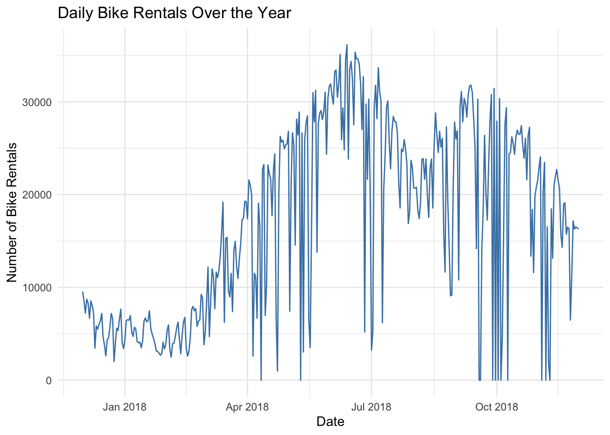
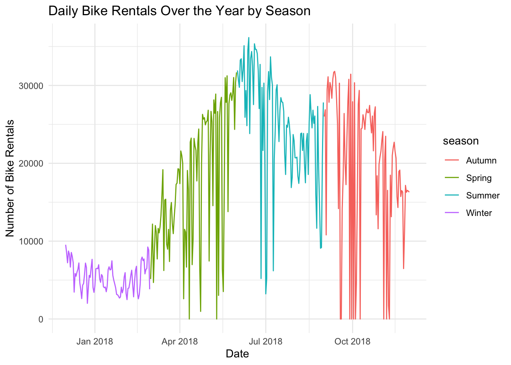
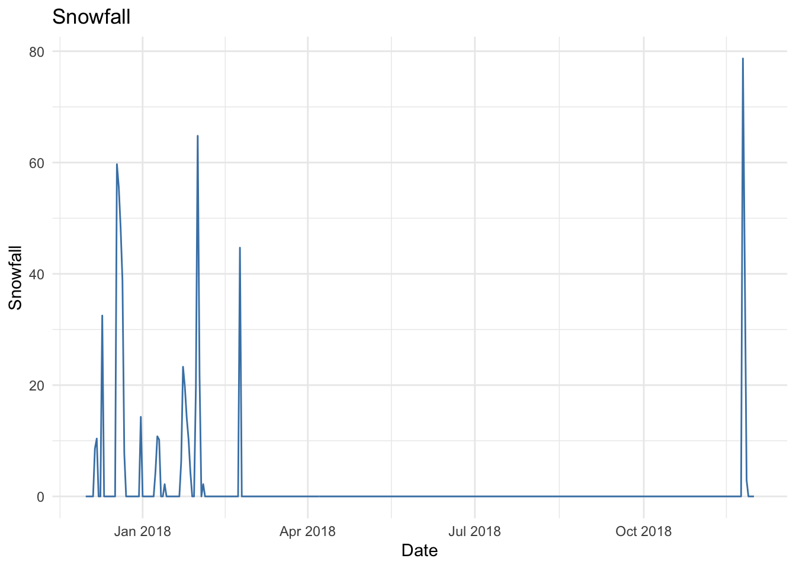
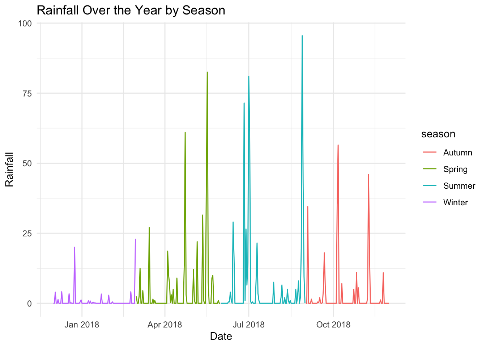
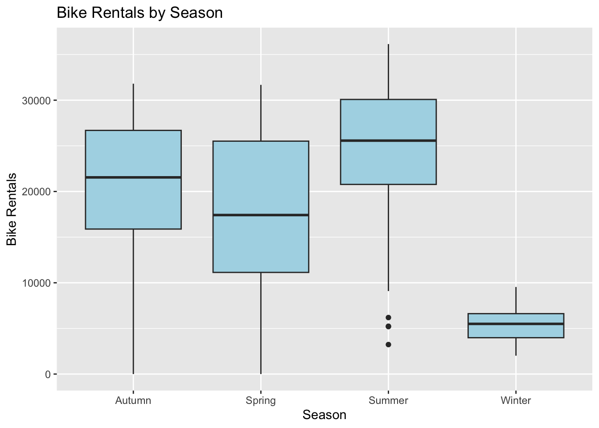
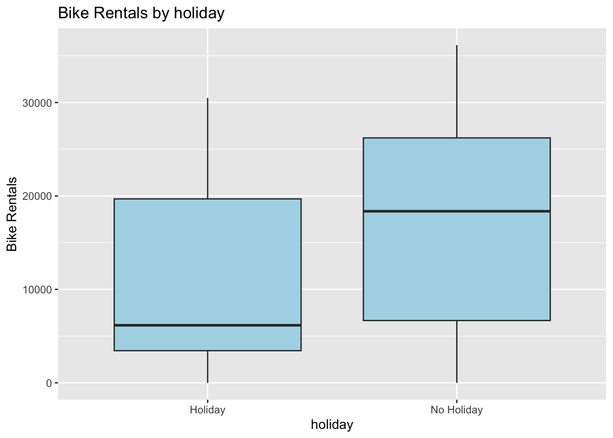
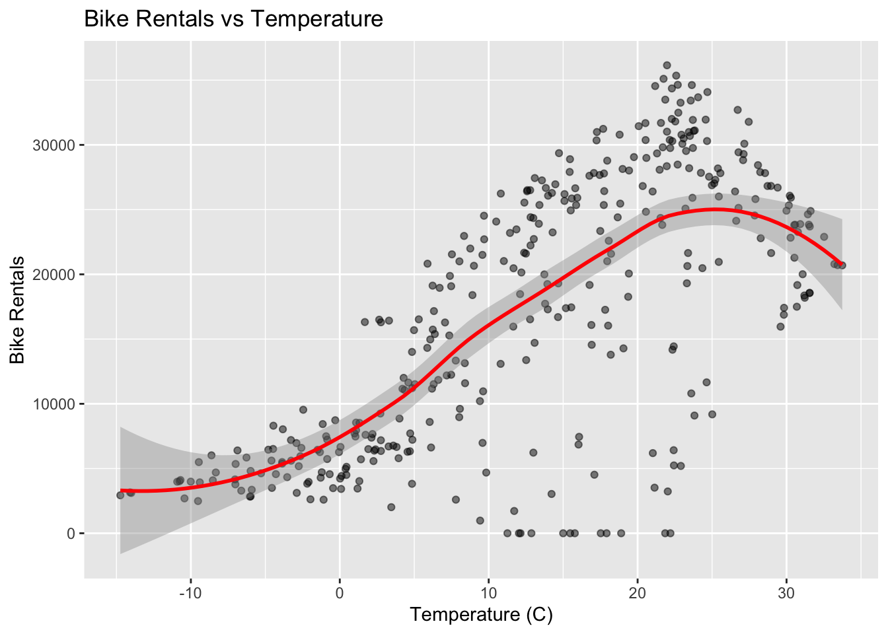

Quarto enables you to weave together content and executable code into a finished document. To learn more about Quarto see https://quarto.org.
Running Code
When you click the Render button a document will be generated that includes both content and the output of embedded code. You can embed code like this:
#Reading Data
library(tidyverse)
── Attaching core tidyverse packages ──────────────────────── tidyverse 2.0.0 ──
✔ dplyr 1.1.4 ✔ readr 2.1.5
✔ forcats 1.0.0 ✔ stringr 1.5.2
✔ ggplot2 4.0.0 ✔ tibble 3.2.1
✔ lubridate 1.9.4 ✔ tidyr 1.3.1
✔ purrr 1.1.0
── Conflicts ────────────────────────────────────────── tidyverse_conflicts() ──
✖ dplyr::filter() masks stats::filter()
✖ dplyr::lag() masks stats::lag()
ℹ Use the conflicted package (<http://conflicted.r-lib.org/>) to force all conflicts to become errors
#had an issue when I first ran it, this came from the ? in some of the titles. I just removed those and now it seems to read in fine!SeoulBikeData <-read_csv("SeoulBikeData.csv")
Rows: 8760 Columns: 14
── Column specification ────────────────────────────────────────────────────────
Delimiter: ","
chr (4): Date, Seasons, Holiday, Functioning Day
dbl (10): Rented Bike Count, Hour, Temperature(C), Humidity(%), Wind speed (...
ℹ Use `spec()` to retrieve the full column specification for this data.
ℹ Specify the column types or set `show_col_types = FALSE` to quiet this message.
#changint to a tibble to make things easierseoul_tbl<-as.tibble(SeoulBikeData)
Warning: `as.tibble()` was deprecated in tibble 2.0.0.
ℹ Please use `as_tibble()` instead.
ℹ The signature and semantics have changed, see `?as_tibble`.
##EDA
#Checking the Data
#First we will check to see if there is anything missing#In or to figure out which data is numerical and categorical, we first look at the structure of the Seoul Bike Data CsVstr(seoul_tbl)
#now that we have the structure, we will find summary stats for numeric columns seoul_tbl |>summarize(across(c(`Rented Bike Count`, `Temperature(C)`, `Humidity(%)`, `Wind speed (m/s)`,`Visibility (10m)`, `Dew point temperature(C)`, `Solar Radiation (MJ/m2)`, `Rainfall(mm)`, `Snowfall (cm)`), list(min=min, median=median, mean = mean, sd = sd, max=max), .names ="{col}_{fn}"))
# A tibble: 1 × 45
`Rented Bike Count_min` `Rented Bike Count_median` `Rented Bike Count_mean`
<dbl> <dbl> <dbl>
1 0 504. 705.
# ℹ 42 more variables: `Rented Bike Count_sd` <dbl>,
# `Rented Bike Count_max` <dbl>, `Temperature(C)_min` <dbl>,
# `Temperature(C)_median` <dbl>, `Temperature(C)_mean` <dbl>,
# `Temperature(C)_sd` <dbl>, `Temperature(C)_max` <dbl>,
# `Humidity(%)_min` <dbl>, `Humidity(%)_median` <dbl>,
# `Humidity(%)_mean` <dbl>, `Humidity(%)_sd` <dbl>, `Humidity(%)_max` <dbl>,
# `Wind speed (m/s)_min` <dbl>, `Wind speed (m/s)_median` <dbl>, …
#now we will figure out what unique names there are in the categorical variable columns by doing countsseoul_tbl|>count(Date)
#So now we know: #There are many different dates.#Seasons are Autumn, Winter, Spring, Summer#Holiday options are Holiday or No Holiday.#Functioning Day options are No or Yes#now let's convert that date column to an actual date using lubridateseoul_tbl$Date <-dmy(seoul_tbl$Date)#double check that the structure changed like we wanted it tostr(seoul_tbl$Date)
seoul_tbl<-seoul_tbl|>mutate(Seasons =as.factor(Seasons),Holiday=as.factor(Holiday),Hour=as.factor(Hour),`Functioning Day`=as.factor(`Functioning Day`) ) #quick check to make sure converting to factors worked as desiredstr(seoul_tbl)
#Looks like it works now!#renaming all the columns to easier thingsseoul_tbl<- seoul_tbl|>rename("bike_rentals"="Rented Bike Count", "hour"="Hour", "temp"="Temperature(C)", "humidity"="Humidity(%)", "wind"="Wind speed (m/s)","visibility"="Visibility (10m)", "dew_temp"="Dew point temperature(C)", "solar_rad"="Solar Radiation (MJ/m2)","rainfall"="Rainfall(mm)", "snowfall"="Snowfall (cm)", "season"="Seasons", "holiday"="Holiday","functioning"="Functioning Day")#checking if this worked as desired colnames(seoul_tbl)
#it worked!#now we want to explore the data some more, seeing what we notice#Let's first look at summary statistics for temptemp_sum<- seoul_tbl|>summarize(min =min(temp, na.rm =TRUE),median =median(temp, na.rm =TRUE),mean =mean(temp, na.rm =TRUE),sd =sd(temp, na.rm =TRUE),max =max(temp, na.rm =TRUE) )print(temp_sum)
# A tibble: 1 × 5
min median mean sd max
<dbl> <dbl> <dbl> <dbl> <dbl>
1 -17.8 13.7 12.9 11.9 39.4
# A tibble: 1 × 5
min median mean sd max
<dbl> <dbl> <dbl> <dbl> <dbl>
1 0 0 0.0751 0.437 8.8
#now let's do the same for bike rentals, really focusing on what we noticebike_sum<- seoul_tbl|>summarize(min =min(bike_rentals, na.rm =TRUE),median =median(bike_rentals, na.rm =TRUE),mean =mean(bike_rentals, na.rm =TRUE),sd =sd(bike_rentals, na.rm =TRUE),max =max(bike_rentals, na.rm =TRUE) )print(bike_sum)
# A tibble: 1 × 5
min median mean sd max
<dbl> <dbl> <dbl> <dbl> <dbl>
1 0 504. 705. 645. 3556
#now lets do some analyis while also grouping with bike rentals to see if we see anything that we should remove from the dataseoul_tbl |>group_by(functioning)|>summarize(across(c( bike_rentals), list("max"=max,"min"=min, "mean"= mean, "median"= median, "sd"=sd), .names ="{.fn}_{.col}"))
#I am noticing here that when the functioning is "no" there are no bike rentals!seoul_tbl |>group_by(functioning, season)|>summarize(across(c( bike_rentals), list("max"=max,"min"=min, "mean"= mean, "median"= median, "sd"=sd), .names ="{.fn}_{.col}"))
`summarise()` has grouped output by 'functioning'. You can override using the
`.groups` argument.
# A tibble: 6 × 7
# Groups: functioning [2]
functioning season max_bike_rentals min_bike_rentals mean_bike_rentals
<fct> <fct> <dbl> <dbl> <dbl>
1 No Autumn 0 0 0
2 No Spring 0 0 0
3 Yes Autumn 3298 2 924.
4 Yes Spring 3251 2 746.
5 Yes Summer 3556 9 1034.
6 Yes Winter 937 3 226.
# ℹ 2 more variables: median_bike_rentals <dbl>, sd_bike_rentals <dbl>
#Here I am noticing that the only time there was no functioning was in autumn and springseoul_tbl |>group_by(hour)|>summarize(across(c( bike_rentals), list("max"=max,"min"=min, "mean"= mean, "median"= median, "sd"=sd), .names ="{.fn}_{.col}"))
`summarise()` has grouped output by 'Date', 'season'. You can override using
the `.groups` argument.
#Now let's do the same summary statistics but for this new subsetted data#Let's first look at summary statistics for tempnew_temp_sum<- seoul_tbl|>summarize(min =min(day_temp, na.rm =TRUE),median =median(day_temp, na.rm =TRUE),mean =mean(day_temp, na.rm =TRUE),sd =sd(day_temp, na.rm =TRUE),max =max(day_temp, na.rm =TRUE) )
`summarise()` has grouped output by 'Date'. You can override using the
`.groups` argument.
print(new_temp_sum)
# A tibble: 365 × 7
# Groups: Date [365]
Date season min median mean sd max
<date> <fct> <dbl> <dbl> <dbl> <dbl> <dbl>
1 2017-12-01 Winter -2.45 -2.45 -2.45 NA -2.45
2 2017-12-02 Winter 1.33 1.33 1.33 NA 1.33
3 2017-12-03 Winter 4.88 4.88 4.88 NA 4.88
4 2017-12-04 Winter -0.304 -0.304 -0.304 NA -0.304
5 2017-12-05 Winter -4.46 -4.46 -4.46 NA -4.46
6 2017-12-06 Winter 0.0458 0.0458 0.0458 NA 0.0458
7 2017-12-07 Winter 1.09 1.09 1.09 NA 1.09
8 2017-12-08 Winter -3.82 -3.82 -3.82 NA -3.82
9 2017-12-09 Winter -0.846 -0.846 -0.846 NA -0.846
10 2017-12-10 Winter 1.19 1.19 1.19 NA 1.19
# ℹ 355 more rows
`summarise()` has grouped output by 'Date'. You can override using the
`.groups` argument.
print(new_snowfall_sum)
# A tibble: 365 × 7
# Groups: Date [365]
Date season min median mean sd max
<date> <fct> <dbl> <dbl> <dbl> <dbl> <dbl>
1 2017-12-01 Winter 0 0 0 NA 0
2 2017-12-02 Winter 0 0 0 NA 0
3 2017-12-03 Winter 0 0 0 NA 0
4 2017-12-04 Winter 0 0 0 NA 0
5 2017-12-05 Winter 0 0 0 NA 0
6 2017-12-06 Winter 8.6 8.6 8.6 NA 8.6
7 2017-12-07 Winter 10.4 10.4 10.4 NA 10.4
8 2017-12-08 Winter 0 0 0 NA 0
9 2017-12-09 Winter 0 0 0 NA 0
10 2017-12-10 Winter 32.5 32.5 32.5 NA 32.5
# ℹ 355 more rows
#now let's do the same for bike rentals, really focusing on what we noticenew_bike_sum<- seoul_tbl|>summarize(min =min(day_bike_rentals, na.rm =TRUE),median =median(day_bike_rentals, na.rm =TRUE),mean =mean(day_bike_rentals, na.rm =TRUE),sd =sd(day_bike_rentals, na.rm =TRUE),max =max(day_bike_rentals, na.rm =TRUE) )
`summarise()` has grouped output by 'Date'. You can override using the
`.groups` argument.
print(bike_sum)
# A tibble: 1 × 5
min median mean sd max
<dbl> <dbl> <dbl> <dbl> <dbl>
1 0 504. 705. 645. 3556
#now lets do some analyis while also grouping with bike rentals to see if we see anything that we should remove from the dataseoul_tbl |>summarize(across(c(day_bike_rentals), list("max"=max,"min"=min, "mean"= mean, "median"= median, "sd"=sd), .names ="{.fn}_{.col}"))
`summarise()` has grouped output by 'Date'. You can override using the
`.groups` argument.
#I am noticing here that when the functioning is "no" there are no bike rentals!seoul_tbl |>group_by(season)|>summarize(across(c(day_bike_rentals), list("max"=max,"min"=min, "mean"= mean, "median"= median, "sd"=sd), .names ="{.fn}_{.col}"))
#Here I am noticing that the only time there was no functioning was in autumn and springseoul_tbl |>group_by(holiday)|>summarize(across(c(day_bike_rentals), list("max"=max,"min"=min, "mean"= mean, "median"= median, "sd"=sd), .names ="{.fn}_{.col}"))
#here we look at the bike rentals over the year, you can see it is much lower in the winterggplot(seoul_tbl, aes(x = Date, y = day_bike_rentals)) +geom_line(color ="steelblue") +labs(title ="Daily Bike Rentals Over the Year",x ="Date",y ="Number of Bike Rentals" ) +theme_minimal()

#here is the same plot but with different colors for each seasonggplot(seoul_tbl, aes(x = Date, y = day_bike_rentals, color = season)) +geom_line() +labs(title ="Daily Bike Rentals Over the Year by Season",x ="Date",y ="Number of Bike Rentals" ) +theme_minimal()

#here we look at the snow fall over the year, you can see it is much higher in the winter, no snow in summer months in seoulggplot(seoul_tbl, aes(x = Date, y = day_snowfall)) +geom_line(color ="steelblue") +labs(title ="Snowfall",x ="Date",y ="Snowfall" ) +theme_minimal()

#here is is a plot for with different colors for each season, it looks like the high days of rain are in summer with least rain in winterggplot(seoul_tbl, aes(x = Date, y = day_rainfall, color = season)) +geom_line() +labs(title ="Rainfall Over the Year by Season",x ="Date",y ="Rainfall" ) +theme_minimal()

#average bike rentals by season as a boxplot, highest median rentals in summer which makes senseggplot(seoul_tbl, aes(x = season, y = day_bike_rentals)) +geom_boxplot(fill ="lightblue") +labs(title ="Bike Rentals by Season", x ="Season", y ="Bike Rentals")

#average bike rentals by holiday as a boxplot, higher median of rentals when there was no holidayggplot(seoul_tbl, aes(x = holiday, y = day_bike_rentals)) +geom_boxplot(fill ="lightblue") +labs(title ="Bike Rentals by holiday", x ="holiday", y ="Bike Rentals")

#weather effects on bike rentals with some smoothing. Higher temps had more rentalsggplot(seoul_tbl, aes(x = day_temp, y = day_bike_rentals)) +geom_point(alpha =0.5) +geom_smooth(method ="loess", color ="red") +labs(title ="Bike Rentals vs Temperature", x ="Temperature (C)", y ="Bike Rentals")
`geom_smooth()` using formula = 'y ~ x'

#now lets find all of the correlationscolnames(seoul_tbl)
#trying to plot some faceted scatter plots with bike rentals and other numeric variables# Reshape numeric variables into long formatnumeric_long <- seoul_tbl |>ungroup()|>select(day_bike_rentals, day_dew_temp, day_humidity, day_wind, day_rainfall, day_snowfall, day_solar_rad, day_visibility, day_temp)|>pivot_longer(cols =-day_bike_rentals,names_to ="variable",values_to ="value")# Plot using facetsggplot(numeric_long, aes(x = value, y = day_bike_rentals)) +geom_point() +geom_smooth(method ="lm", se =FALSE) +facet_wrap(~variable, scales ="free_x") +labs(x ="Value", y ="Bike Rentals") +theme_minimal()
#Use functions from tidymodels to split the data into a training and test set (75/25 split). Use the strata argument to stratify the split on the seasons variable.set.seed(10)seoul_split <-initial_split(seoul_tbl, prop =0.75, strata = season)seoul_train <-training(seoul_split)seoul_test <-testing(seoul_split)seoul_train
# A tibble: 273 × 12
# Groups: Date, season [273]
Date season holiday day_bike_rentals day_rainfall day_snowfall day_temp
<date> <fct> <fct> <dbl> <dbl> <dbl> <dbl>
1 2018-09-01 Autumn No Hol… 26010 0 0 25.5
2 2018-09-03 Autumn No Hol… 10802 34.5 0 23.6
3 2018-09-04 Autumn No Hol… 29529 0 0 23.3
4 2018-09-07 Autumn No Hol… 30381 1.5 0 22.2
5 2018-09-08 Autumn No Hol… 29813 0 0 21.7
6 2018-09-09 Autumn No Hol… 28354 0 0 22.0
7 2018-09-10 Autumn No Hol… 30781 0 0 22.9
8 2018-09-11 Autumn No Hol… 31694 0 0 21.6
9 2018-09-13 Autumn No Hol… 30991 0 0 23.4
10 2018-09-14 Autumn No Hol… 28199 0.5 0 23.5
# ℹ 263 more rows
# ℹ 5 more variables: day_humidity <dbl>, day_wind <dbl>, day_visibility <dbl>,
# day_dew_temp <dbl>, day_solar_rad <dbl>
seoul_test
# A tibble: 92 × 12
# Groups: Date, season [92]
Date season holiday day_bike_rentals day_rainfall day_snowfall day_temp
<date> <fct> <fct> <dbl> <dbl> <dbl> <dbl>
1 2017-12-02 Winter No Hol… 8523 0 0 1.33
2 2017-12-03 Winter No Hol… 7222 4 0 4.88
3 2017-12-04 Winter No Hol… 8729 0.1 0 -0.304
4 2017-12-06 Winter No Hol… 6669 1.3 8.6 0.0458
5 2017-12-08 Winter No Hol… 8032 0 0 -3.82
6 2017-12-17 Winter No Hol… 3776 0 0 -7.01
7 2017-12-20 Winter No Hol… 4568 0.2 48.3 -4.29
8 2017-12-21 Winter No Hol… 5734 0 38.9 -0.846
9 2017-12-27 Winter No Hol… 5351 0 0 -7.00
10 2018-01-02 Winter No Hol… 6446 0 0 -1.49
# ℹ 82 more rows
# ℹ 5 more variables: day_humidity <dbl>, day_wind <dbl>, day_visibility <dbl>,
# day_dew_temp <dbl>, day_solar_rad <dbl>
#On the training set, create a 10 fold CV splitget_cv_splits <-function(data, num_folds){#get fold size size_fold <-floor(nrow(data)/num_folds)#get random indices to subset the data with random_indices <-sample(1:nrow(data), size =nrow(data), replace =FALSE)#create a list to save our folds in folds <-list()#now cycle through our random indices vector and take the appropriate observations to each foldfor(i in1:num_folds){if (i < num_folds) { fold_index <-seq(from = (i-1)*size_fold +1, to = i*size_fold, by =1) folds[[i]] <- data[random_indices[fold_index], ] } else { fold_index <-seq(from = (i-1)*size_fold +1, to =length(random_indices), by =1) folds[[i]] <- data[random_indices[fold_index], ] } }return(folds)}folds <-get_cv_splits(seoul_train, 10)
##Fitting MLR Models
1st recipe
first_rec<- recipe(day_bike_rentals ~ ., data = seoul_tbl) |> #creating a week day weeend factor step_rm(Date)|> step_mutate( day_type = factor(if_else(wday(ymd(Date), label = TRUE) %in% c(“Sat”, “Sun”), “Weekend”, “Weekday”)) ) |> step_rm(Date)|> #normaizing the numeric step_normalize(all_numeric())|> step_dummy(newseason, newholiday, newdate)